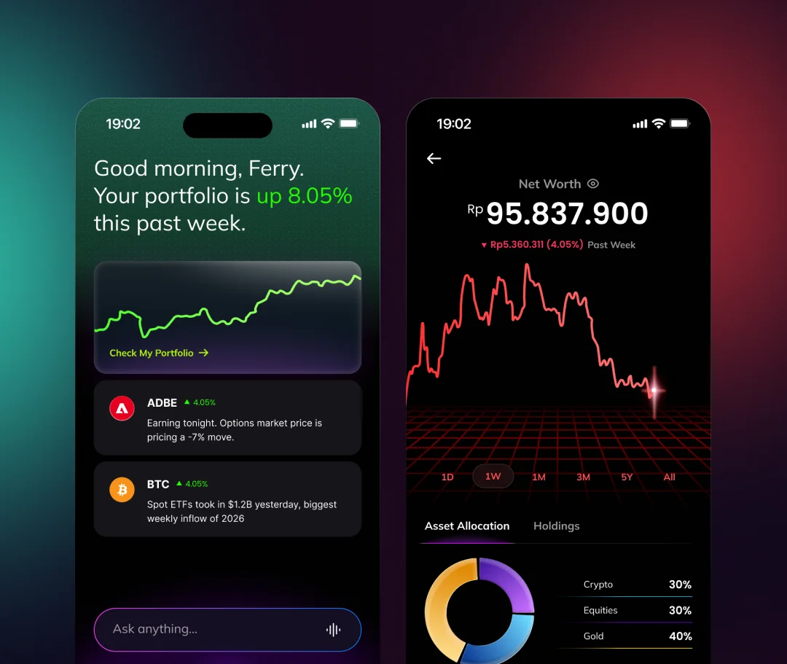
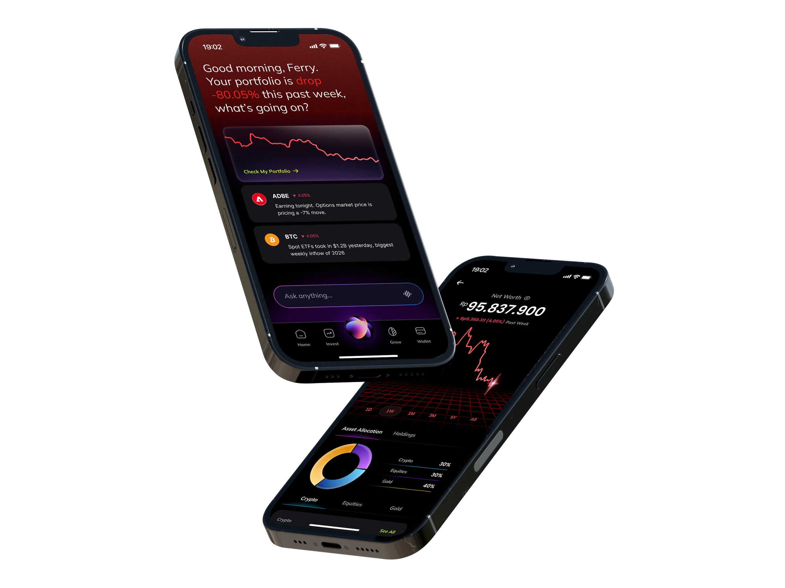
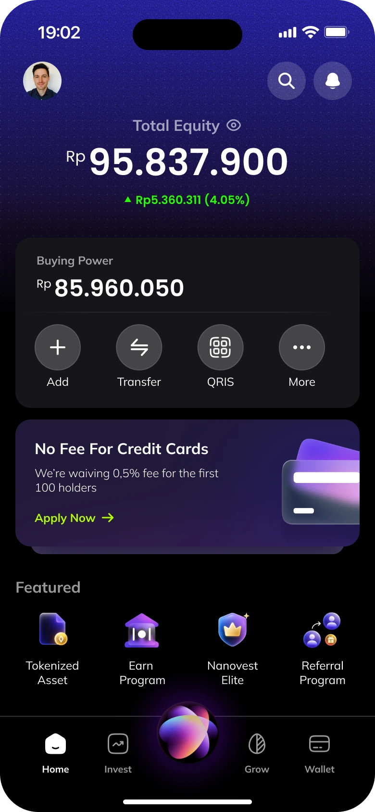
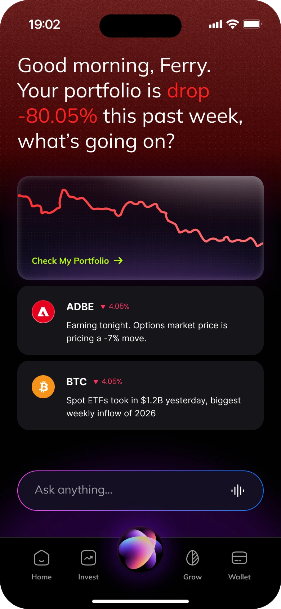
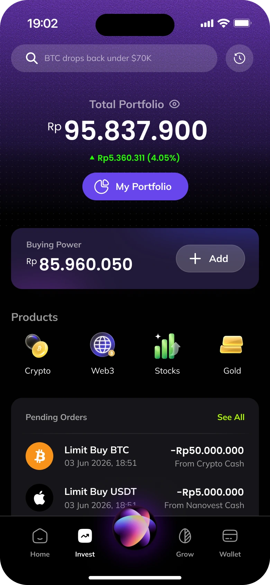
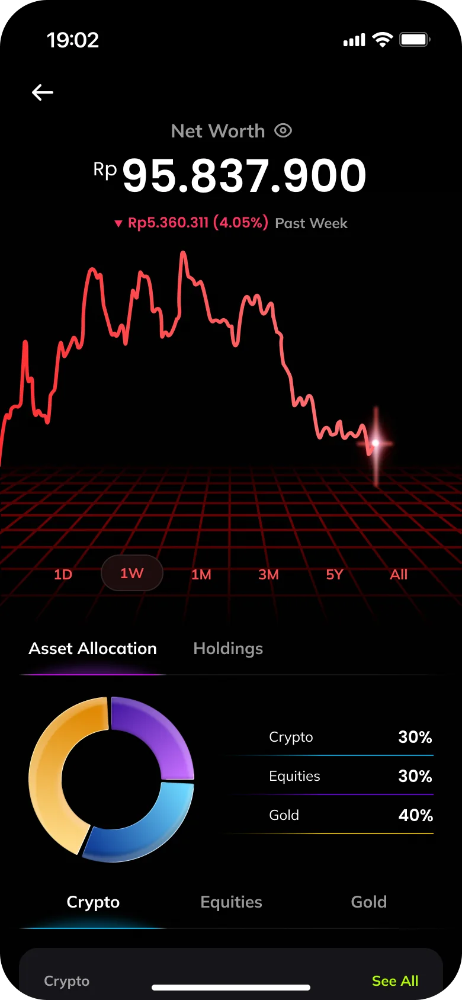
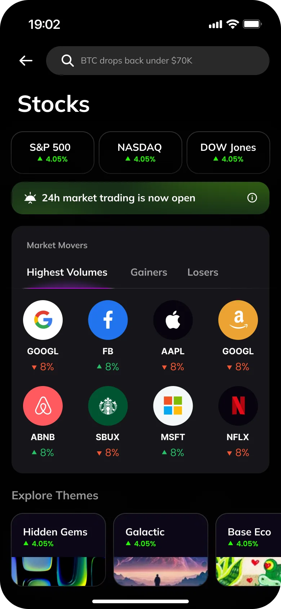
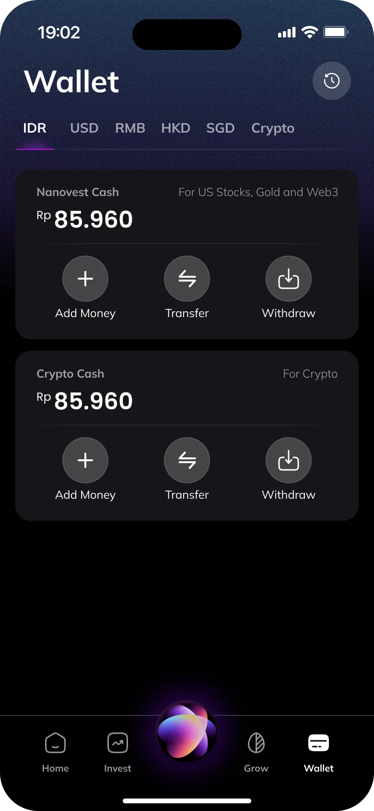
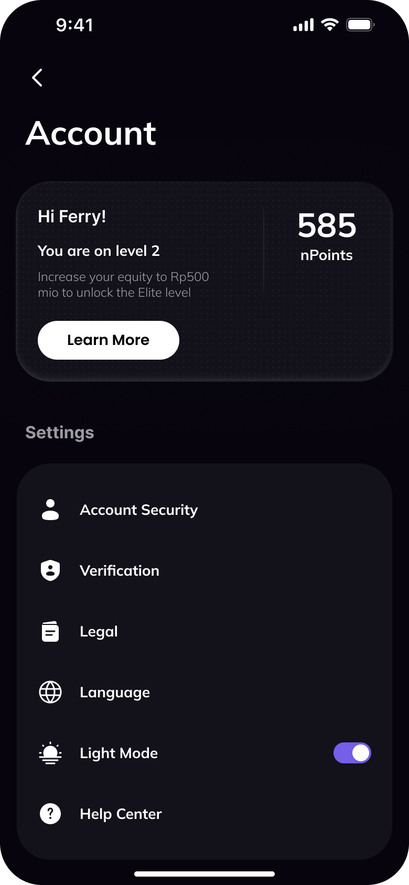
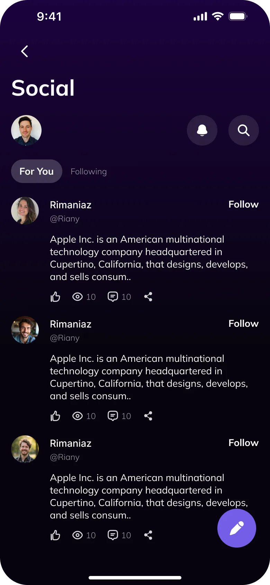

Nanovest App Redesign
Nanovest had no AI. I redesigned the app around an assistant that makes checking the market, prices and your portfolio as easy as asking a question, inside a calmer, more professional interface.
Visit nanovest.io- Company
- Sector
- Role
- Team
- Period
- Surface

Overview
AI has become a standard part of modern investing apps, and Nanovest didn't have it yet. The goal was to add an assistant that takes the effort out of checking the market, prices and your own portfolio. That meant more than adding a chat box: deciding where the assistant lives, how the whole app should look around it, and how to make it feel trustworthy when money is involved. I researched how other apps do it, iterated with the product team, and built a full design system to carry it.
Look and feel

Scope
- 01Competitor research & benchmarking
- 02Research with Claude
- 03Full design system
- 04AI assistant & navigation model
- 05Information architecture
- 06AI answers: markets, prices, portfolio
- 07Wallet & multi-currency flows
- 08Wireframes
- 09Interface design
- 10Empty & alert states
- 11Prototyping
- 12Iteration with the product team
Problem
AI is now the standard in investing apps. Nanovest didn't have it yet.
Across finance and trading apps, an AI assistant has gone from nice-to-have to something people expect: ask a question, get an answer, skip the digging. Nanovest had nothing like it. Checking a price, a market move or how a portfolio was doing meant opening the right tab and hunting for it, and every extra tap adds friction. Revamping the app was our way of catching up with that standard.
Adding AI also exposed a second problem. The app leaned on a bright purple-to-pink gradient and colourful, badge-style icons, which reads as playful. That's the wrong tone for an assistant people might lean on for financial decisions, and it made a stock alert and a referral promo feel equally lightweight. And an assistant tucked into a single screen would be a widget, not a capability. It needed a calmer look and a permanent place in the app.
Research
The real question was never what the AI says. It was where it lives.
I audited the existing Nanovest app screen by screen, from Home and Invest to Wallet and Account, marking every place an AI answer could surface and what it would compete with there. Then I benchmarked how competitors and other finance and trading apps place an assistant: a floating button, a chat tab, a search field, or a slot in the navigation. For each pattern I checked how many taps it takes to reach, whether it survives a change of screen, and whether it reads as part of the product or a widget on top of it. I kept the references on one board to read the assistant patterns beside the dark, technical visual language.
I used Claude as a research assistant, not as the decision maker. It searched Mobbin for AI chat screens across finance and banking apps, general assistants and companion apps, and gathered more than 70 of them into one Figma board, sorted into those three groups, so I could compare placement, empty states and how answers carry data. I read every screen myself, dropped the ones that didn't hold up, and the conclusions below are my own.
Most of the patterns put the assistant on a single screen or on a floating button above the content, so reaching it depended on where someone already was. That was the gap: AI as a destination, not a layer under every tab. It settled the placement before any visual work. The assistant goes into the tab bar itself, and the interface around it turns dark and restrained, so it reads as something worth trusting with money.
Structure
Where the AI lives, and how it follows someone through the app.
The assistant sits in the centre of the tab bar, between Invest and Grow, so it stands over every destination instead of inside one of them. Around it the app keeps four tabs: Home, Invest, Grow and Wallet. Invest holds the products (Crypto, Web3, Stocks and Gold) and the portfolio drill-down, and Wallet holds Nanovest Cash and Crypto Cash, with a tab for each currency.
The flow follows one question, “what is going on with my money right now?”, and it starts the same way from any tab: tap the centre icon, type or speak, get an answer that names the positions behind it, then go straight to the portfolio or the asset. I also drew the edge cases before any visual design: what the assistant shows for an empty portfolio, and how an alert looks different from the resting state. Both were decided in the wireframes, before colour or type came into it.
What people can ask is deliberately practical: how a market or asset is doing today, the current price of a stock, coin or gold, why a portfolio moved, and which movers are worth a look. Each answer names the positions or assets behind it and links straight to them, so the assistant saves a trip through the app instead of adding one.
None of this happened in isolation. I took placement, wireframes and visual directions through several rounds with the product team, and scope, flows and priorities shifted after each one.
With the wireframes settled, I explored the visual side on a single canvas: the existing app, an updated pass, a reskin and the 2.6 explorations, side by side, to produce many directions before choosing one.
From the chosen direction I built a full design system: the foundations (typography, colour scales, spacing and radius), then the components and patterns on top of them, so every screen draws from the same tokens and parts instead of one-off values.
Approach
A calmer look, and an AI assistant one tap away.
The interface rebuilt dark-first: near-black surfaces, a narrow set of cool graphite tones, replacing the purple-pink gradient identity with something closer to a trading terminal than a lifestyle app. Colour stopped decorating and started signalling, an accent only appears when it's carrying information, a gain, a loss, an alert that needs attention.
The center icon in the tab bar, previously a static brand mark, became the app's AI entry point. Tapping it from Home, Invest, Wallet or Account opens the same Ask Anything surface, so getting an answer never depends on which screen someone happens to be on.
On Home specifically, that AI layer surfaces as two things: a calm resting state in the everyday dark palette, and a deliberately sharper red state when the AI has something to flag, a drawdown, an earnings move, so the one moment worth noticing looks different from the fifty that aren't.
Screens







